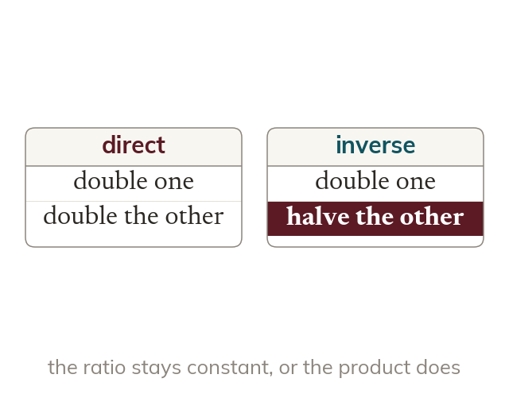

Inverse proportion
In inverse proportion, doubling one quantity halves the other. Their PRODUCT stays constant, not their ratio.
Two quantities are in inverse proportion when multiplying one DIVIDES the other by the same factor - their PRODUCT stays constant, rather than their ratio. Doubling one halves the other; this is the opposite of direct proportion, where doubling one doubles the other.